Если нужен «марафет» под продажу — это не к нам
Быстро закрасить рыжики перед объявлением умеют многие, и стоит это в разы дешевле. Мы так не работаем: если под краской осталась ржавчина, она вернётся — и вернётся к тому, кто купит машину после вас.
Центр реставрации и кузовного ремонта · Макаренко, 672 · Калининский район
Мы восстанавливаем машины, с которыми хозяин собирается жить дальше: снимаем всё до металла, пескоструим, цинкуем, варим, красим и защищаем. Это не быстро и не дёшево — зато через пять лет за эту работу не будет стыдно ни нам, ни вам.
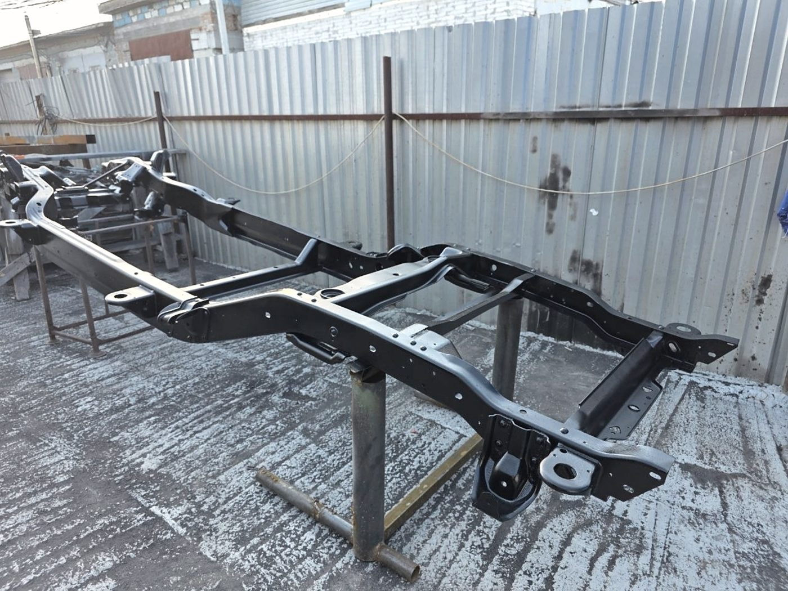
Было и стало
Самый честный способ показать кузовной цех — положить рядом два кадра. Слева то, что приезжает: сквозная коррозия в пороге, в арке, в лонжероне. Справа то, что уезжает: чистый металл под слоями, которые положены по технологии, а не «чтобы не видно было».
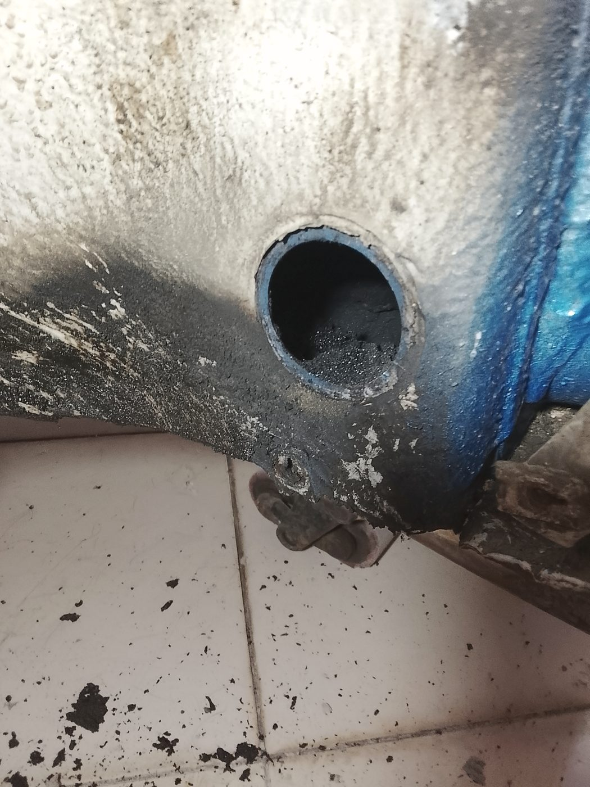
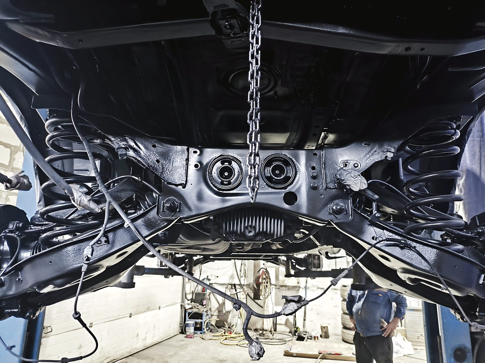
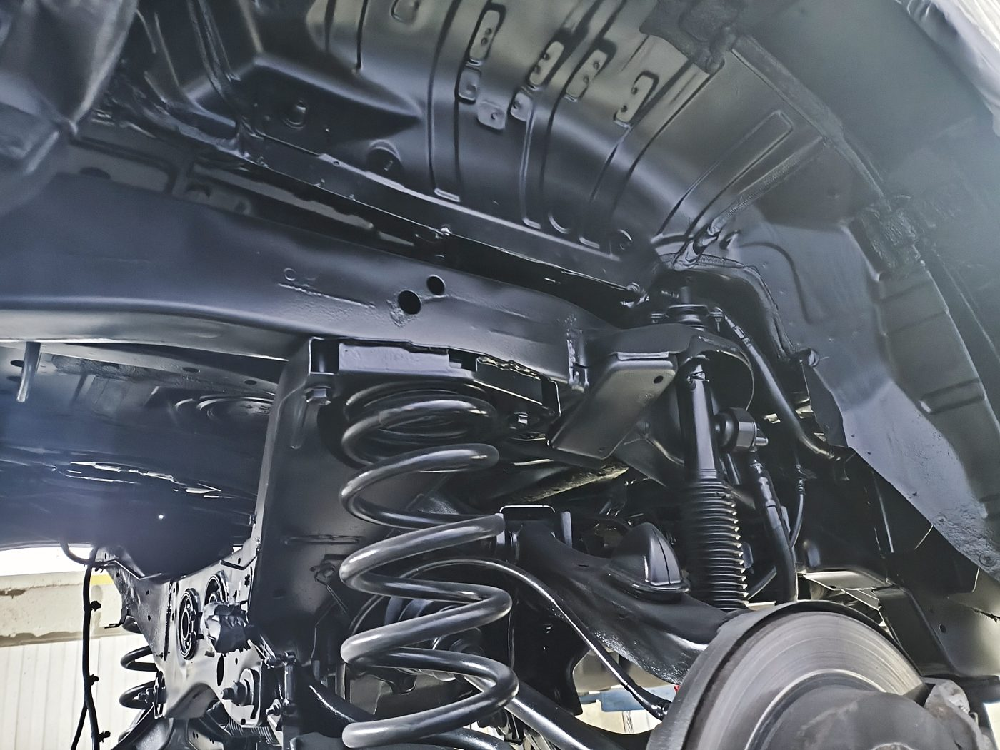
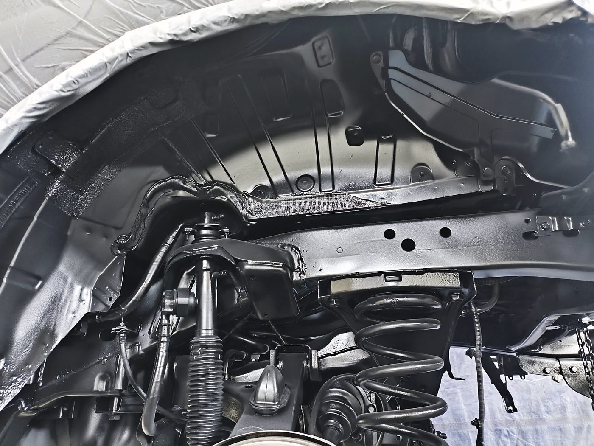
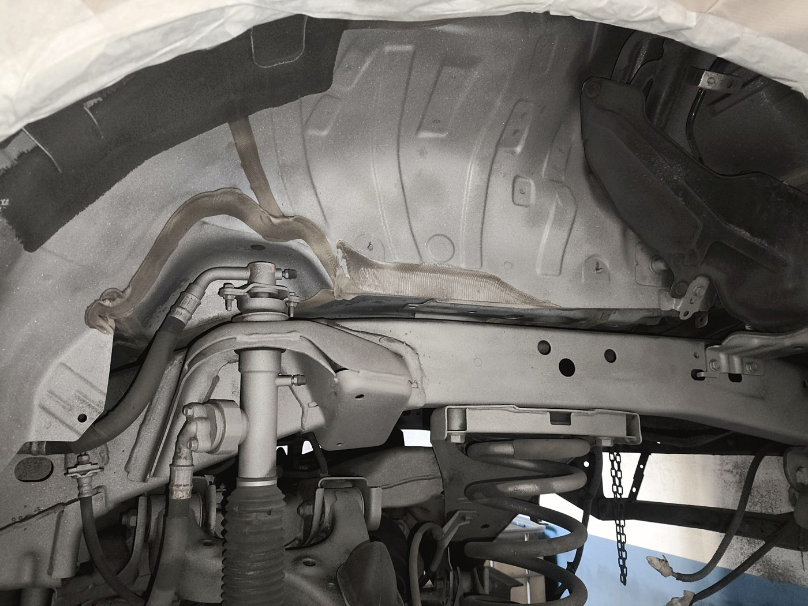
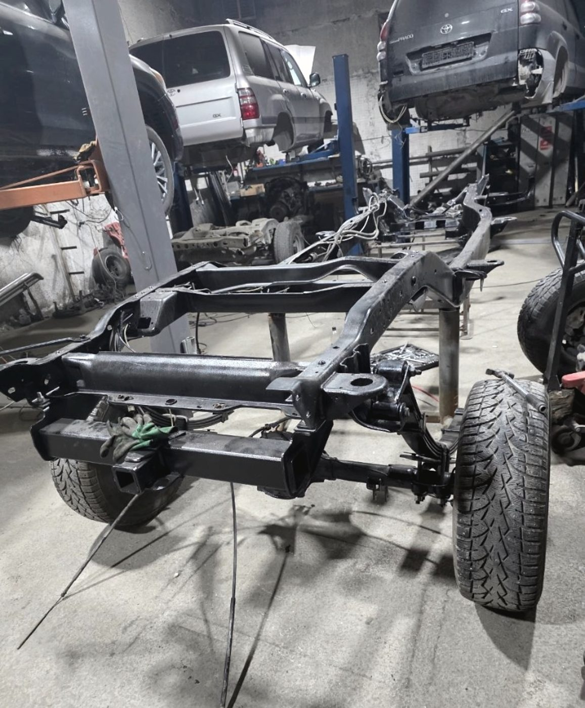
Работы
Возрастные и редкие машины: рамные внедорожники, «американцы», старые японцы. Разбираем, восстанавливаем, собираем.
Кузов, рама, днище, отдельные детали. Отдельный цех — чтобы абразив не летал там, где идёт покраска.
Полная обработка днища и скрытых полостей по технологии, с фотоотчётом на каждом слое.
Пороги, арки, лонжероны, силовая структура. Сварка авто — это то, что написано у нас на баннере в цехе.
Правка кузова после ударов. Сначала геометрия, потом железо, потом краска — иначе смысла нет.
Подбор цвета вплоть до сложных оттенков, покраска в отдельном цехе, восстановительная полировка.
Кабины, будки, полы фургонов, бусики. Берёмся за то, что не помещается в обычный бокс.
От двери и бампера до восстановления половины машины. Цвет подбираем в цвет, зазоры выставляем по месту.
Мы снимаем свои работы и выкладываем их: часть клиентов приезжает именно потому, что посмотрела процесс целиком.
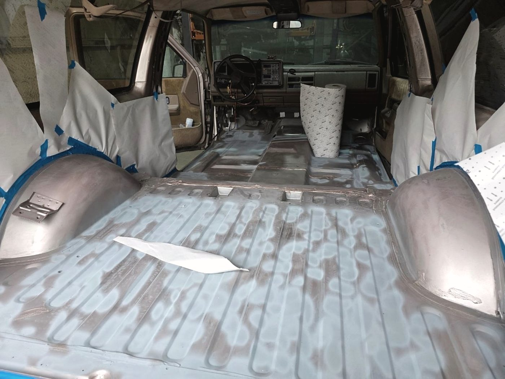
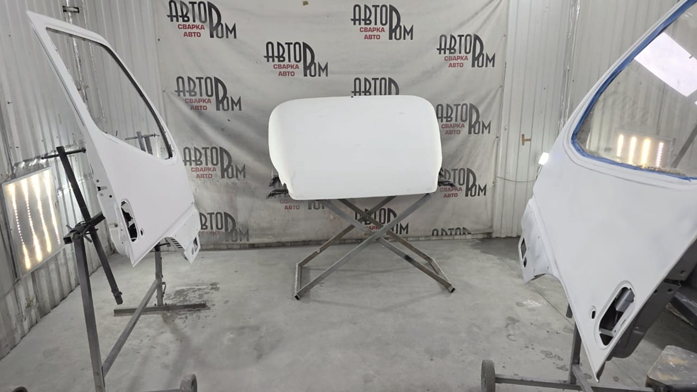
Честно
Лучше всего это сформулировал Евгений, который привозил к нам Tahoe 1993 года — отпескоструить, зацинковать и покрасить раму и днище.
«Это недёшево, это небыстро… но результат того однозначно стоит»
Быстро закрасить рыжики перед объявлением умеют многие, и стоит это в разы дешевле. Мы так не работаем: если под краской осталась ржавчина, она вернётся — и вернётся к тому, кто купит машину после вас.
По ходу работы вылезают вещи, которых не было видно при приёмке, — это нормально для реставрации. Мы согласовываем каждый такой этап отдельно и держим вас в курсе, а не ставим перед фактом на выдаче.
На покраску мы даём гарантию. Если через время появились вопросы — не пишите в отзывы молча: позвоните, назовите номер заказ-наряда и привозите машину. Разбираемся по документу, а не по памяти.
Двигатель, коробка, электрика — не наш профиль. Кузов, рама, металл, защита и краска — наш. В этом мы сильнее, чем в чём-либо ещё.
Отзывы · 4,8 из 5 по 113 оценкам в 2ГИС
«Нигде я не видел такого серьёзного подхода к работе»
Евгений Чернов · реставрация Tahoe 1993 года · отзыв в 2ГИС, 13 мая 2026
Хочу отдельно отметить хорошее оснащение данной станции: пескоструйка, сварка, малярка происходят в отдельных цехах, что отражает серьёзный подход к делу. Уложились в оговорённую сумму и сроки. Видно, что ребята ценят свою репутацию.
Фёдор Ковригин · 2 марта 2026
Сделали пескоструй и покрыли всеми составами, которыми нужно по технологии. Машину отдали раньше срока, тоже очень порадовало. Цену, какую обговорили изначально, не увеличилась к концу выполненных работ.
Евгений Коновалов · 28 января 2026
Весь ход работы фотографируется, что очень удобно: видишь, что происходит с машиной, как производится ремонт. Я уже не надеялся, что моя машина будет как новая.
Евгений Васильев · 13 марта 2026
Очень переживал за подбор цвета, потому что оттенок сложный, но ребята попали идеально, прям цвет в цвет. По зазорам, покраске и сборке вообще без вопросов — всё аккуратно и как с завода.
Александр Морозов · 21 мая 2026
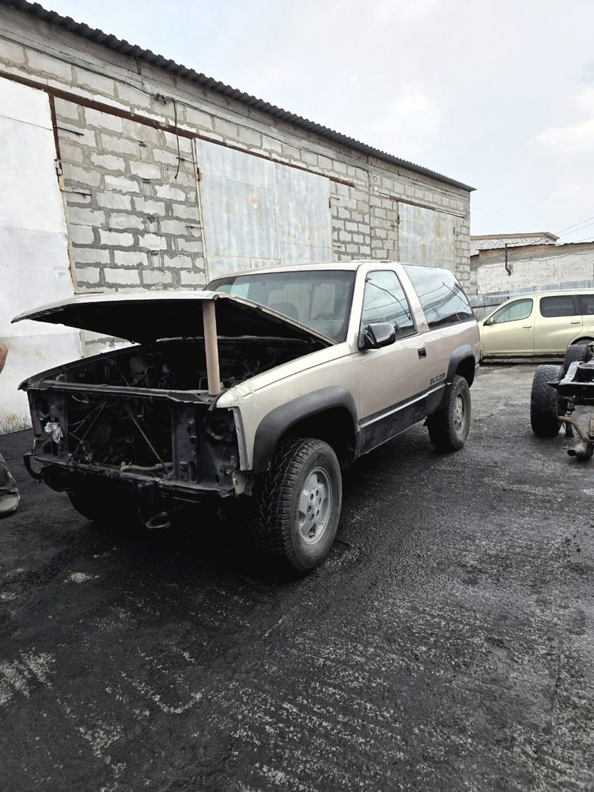
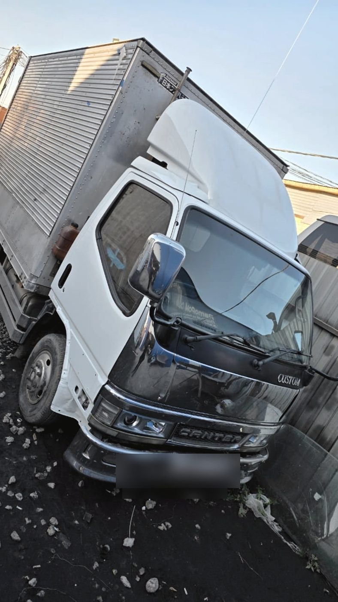
Контакты